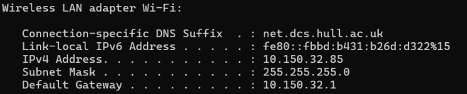
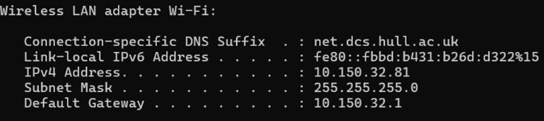
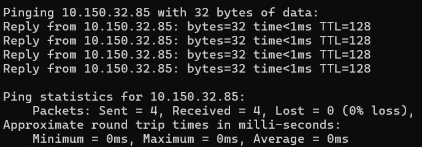
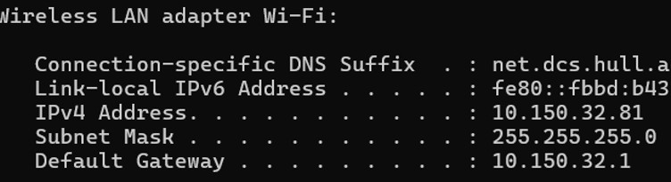
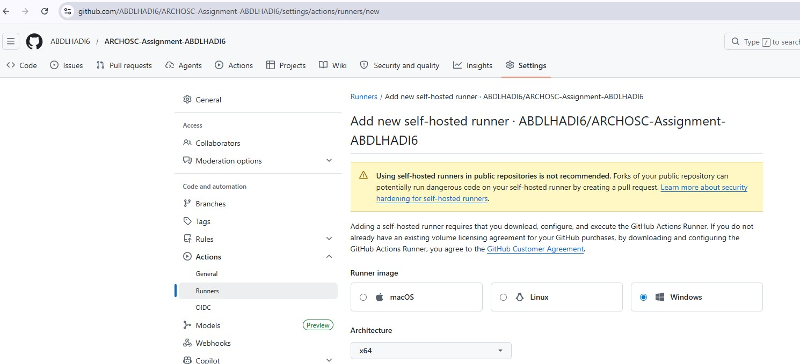
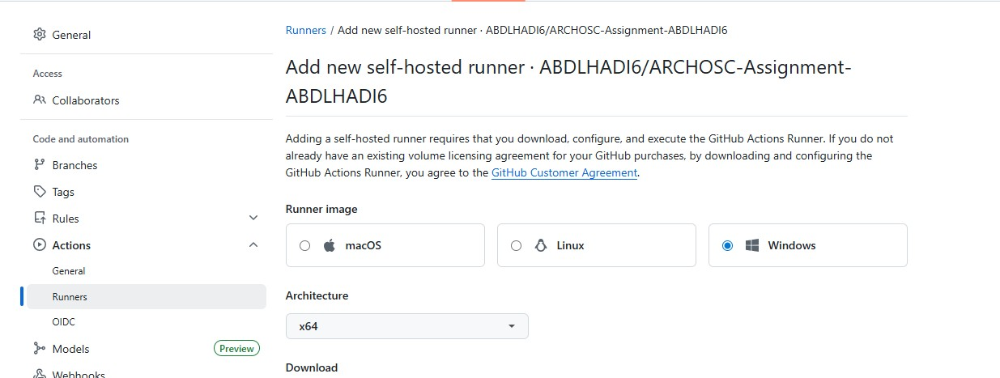
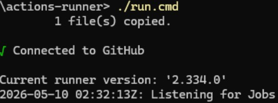
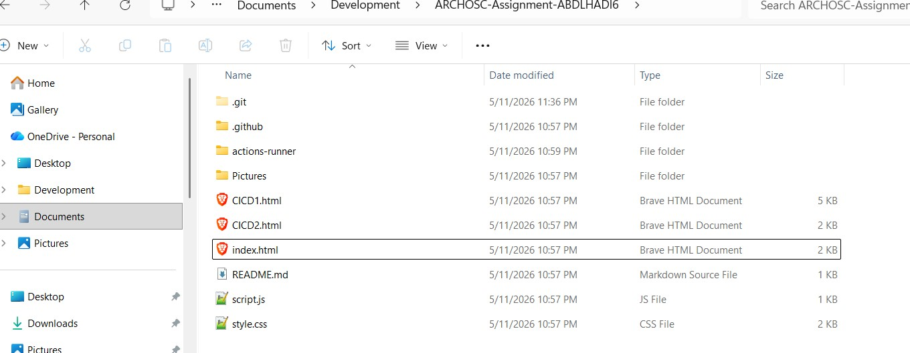
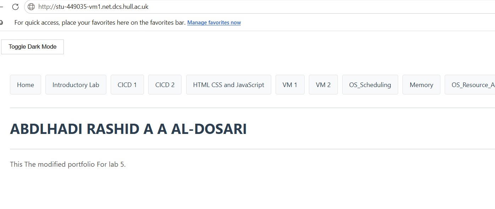

Lab Overview
In this lab, I tested the virtual network between my two VMs (STU-449035-VM1 and STU-449035-VM2) by using ipconfig to find their IPv4 addresses, then using ping to confirm they could communicate. After that, I set up a self-hosted GitHub runner on my deployment VM, which listens for jobs from GitHub. I then created a new YAML workflow called PushToVM that automatically pushes my portfolio files from GitHub to the wwwroot folder on VM1 whenever I make changes. Finally, I tested the setup and confirmed that my updated website was live on http://stu-449035-vm1.net.dcs.hull.ac.uk.
Section 1: Network Connectivity Testing
We verified the virtual network by retrieving the IPv4 address of STU-449035-VM1 and STU-449035-VM2 using ipconfig.
VM1

VM2

Section 2: Bi-Directional Verification
I then performed a Ping from VM1 to STU-449035-VM2 to confirm the machines could communicate. To ensure full network transparency, I repeated the connectivity tests from VM2 back to VM1.


Section 3: Configuring the Self-Hosted Runner
I set up a self-hosted GitHub Runner on STU-449035-VM1 to allow GitHub to deploy code directly to my private server. I registered the runner in the repository settings, installed the necessary files on the VM, and executed ./run.cmd. The runner now listens for deployment instructions specifically for this machine.
When it was public repo

After changing to private

After following the instructions and running the ./run.cmd:

Section 4: Automated CI/CD Pipeline
I created a new GitHub Action workflow, PushToVM.yml, configured with the runs-on: self-hosted tag. I moved the existing files in C:\inetpub\wwwroot to a backup folder and restarted the runner as an Administrator. This allows the pipeline to automatically pull the latest code from GitHub and overwrite the protected web root folder on the VM.

Section 5: Final Deployment Verification
After pushing the new workflow, I verified the deployment by visiting the VM1 web address. The site updated automatically, demonstrating a functional CI/CD pipeline where changes made in the repository are instantly reflected on the private virtual machine.
Now we managed to update and change in VM1 using VM2.
http://stu-449035-vm1.net.dcs.hull.ac.uk
